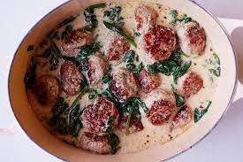

Thai Meatball Soup

Description
Thai inspired soup with meatballs and spinach
Ingredients
- fresh ginger
- 6 garlic cloves
- 1 jalapeno
- 1 lb ground turkey
- 1 lb ground pork
- 3tbs fish sauce (separated)
- 2c chicken broth
- 1 can coconut milk
- 1/2tsp sugar
- 5oz spinach
- lime
Steps
- Mince ginger, garlic, and jalapeno. Transfer half to a large bowl and set the rest aside
- To the large bowl, add ground meat, 2tbs fish sauce and salt. Mix and form meatballs
- In a pot over medium-high heat, brown meatballs (5-8 min) and transfer to plate
- Reduce heat to medium, add reserved ginger, garlic, jalapeno and saute until fragrant
- Add chicken broth, coconut milk, sugar, and 1tbs fish sauce and bring to a simmer
- Add meatballs and juices from plate and simmer for 5-8 minutes
- Remove from heat and add spinach and lime juice
- Serve with rice :)